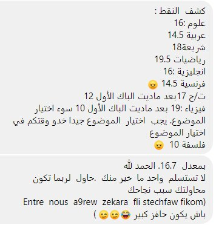

مقال ياسمين.ف
بعد ظهور نتيجة باك 2018 و حصولي على معدل يقارب 15 أي عدم استطاعتي دخول التخصص الذي أريده .أي الدخول في صدمة قوية .لكن هاته لم تكن نهاية العالم كان يجب علي التسجيل في الجامعة. .سجلت في مدرسة عليا للعلوم التطبيقية و لم تكن تخطر في بالي فكرة إعادة البكالوريا حيث أن مجرد التفكير بها يرهقني. لكن مع مرور وقت قليل على بداية دراسة اقتنعت بضرورة إعادة البكالوريا و تحقيق هدفي لست انا الشخص الذي يستسلم بسهولة. بما أني لم أستطع الموازنة بين الدراستين تخليت عن المدرسة وواصلت في مشوار البكالوريا كمترشحة حرة قمت بالتسجيل في الدروس الخصوصية :رياضيات (أستاذ مهاية عين بنيان )علوم (خباز عين بنيان )فيزياء (كركار دالي إبراهيم ) ؛
كان برنامجي كالتالي. من نوفمبر حتى مارس ادرس المواد الأساسية في الشعبة .بما اني كنت شعبة علوم تجريبية يعني درست مات. فيزياء و علوم. الأسبوع فيه 7ايام كل يومين ندرس مادة نراجع الدرس جيدا؛
:بعد ذلك نحل تمارين في هداك الدرس
رياضيات : سلاسل عبد المطلب و بكالوريات سابقة ؛
فيزياء : حليت بكالوريات فقط؛
علوم : دروس 2018 للأستاذ مجادبة؛
كنت نحل كأقل حد 20 تمرين ف كل درس؛
عند وصول شهر مارس. بدأت في دراسة فرنسية انجليزية و عربية . حافظت على البرنامج لقديم زدت دخلت هاد المواد فقط يعني كل يومين ندير مادة فيهم ، فهاد المواد كنت نقرى غير الدرس و كانوا كاينين أساتذة يديرو بلا مقابل فالانجليزية (مسجد عين بنيان)العربية (مراح عين البنيان )؛
في هاذ الفترة تقدر تحس روحك ضعيف مرحش توصل للهدف ديالك يعني مجرد تخيلات لكن متسمحلهمش يسيطرو عليك نقدرو نقولو هاذو أحاسيس المهم عدم الاستسلام .كي لحق نهاية أفريل بديت نحفظ شريعة كنت نصيبلها وقت مع المواد السابقة ؛
:
زدت بعد أيام بديت نحفظ تاريخ و جغرافيا
لكن هاد العام عرفت كيفاه نكسب علامة مليحة فيها مثلا
تعريف الشخصية : ( جنسيته. وظيفته. 3اعمال
المهم اذا كنت تعرفو مليح زيد عبر ) ؛
في التمثيلات البيانية يجب توفر : السلم ، التأطير ، العنوان ، المفتاح؛
: في المقالة
مقدمة؛ -
عرض (عرض يكون على شكل عناصر )؛ -
خاتمة ؛-
: plan b بالنسبة الى الفلسفة مكافنيش الوقت ليها إذن قريت مقترحات لكن وجدت
تحليل نص و رحت جوزت عادي ؛
النصيحة لنقلهالكم استعينوا بالله .صلوا و ادعوا ربي ميخليش انسان لجأ ليه .أفضل من انك تحكي همك للبشر احكيه لخالقك ومدبر أمورك. ومتحكوش بزاف للناس بلي راكو تعادو هكذا يكون أقل ضغط؛
